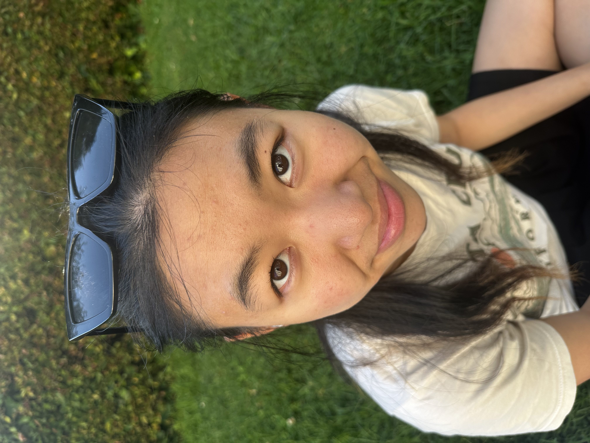
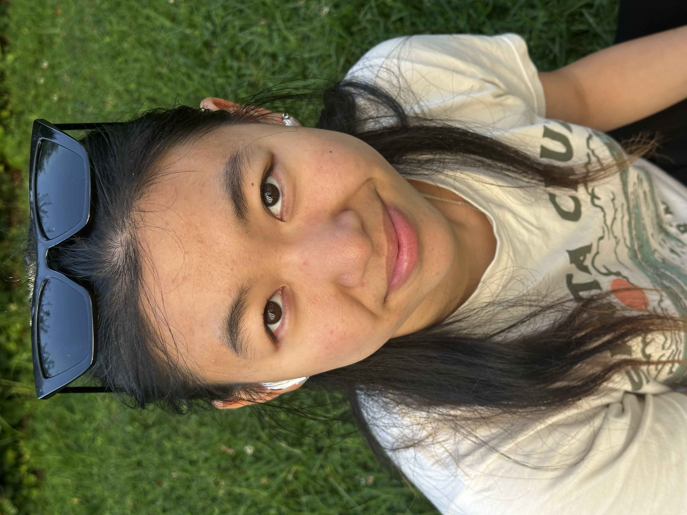

Method
The Wrong Way
Take a close-up selfie portrait, resulting in typical distortion
The Right Way
Step back several feet, zoom in, maintain same face size
Results

Close-up Portrait
(Distorted)
VS

Zoomed Portrait
(Natural)
Analysis
Here, I took a picture of Joy from really close. This resulted in a distorted image that makes her facial features look a bit disproportional. After moving back and zooming in, I took the picture on the right. In this picture, we can see that this new portrait captures a more natural perspective of her features.